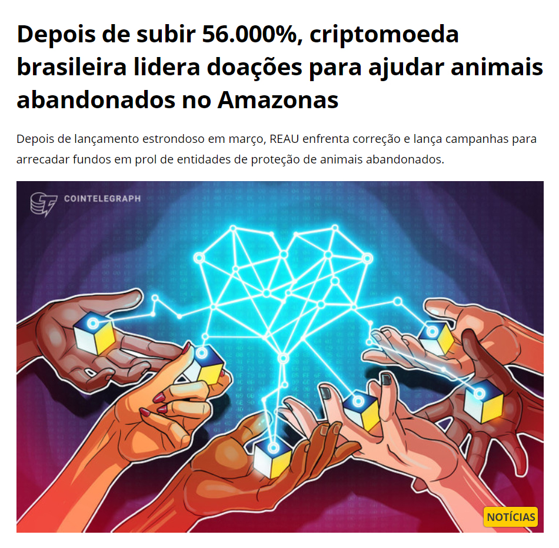

💰 Você sabe o que são criptomoedas?
Criptomoedas são ativos financeiros que não possuem dono e regulam-se apenas pelos seus próprios investidores. O Bitcoin, que todo mundo já conhece, é responsável pelas histórias de pessoas que enriqueceram com investimentos minúsculos. Isso abriu portas para um novo tipo de especulação financeira e para um mercado diverso de moedas com diferentes propósitos.
As criptomoedas são o investimento mais promissor da atualidade, e muitos analistas consideram as finanças descentralizadas o futuro da economia mundial. 🌎
Enquanto em alguns países é possível pagar até o cafézinho em cripto ☕, a sociedade brasileira ainda está muito alheia à segurança, tecnologia e às vantagens que envolvem ativos digitais. Isso precisa ser visto como uma grande oportunidade! Existem milhares - ou até milhões - de brasileiros que podem ser apresentados ao universo cripto. E tem mais!
🐕 O Nosso Vira-Lata
A REAU é um criptoativo de cunho social que, através do humor e da educação busca introduzir milhões de brasileiros ao mundo dos investimentos e nutrir neles a consciência pelo ato da doação. O projeto surgiu como protesto à ausência do vira-lata caramelo nas notas de R$200, e se escreve "REAU" pois "AU" é uma homenagem ao som dos cães! 🐶
Visite o site oficialCom o "protagonismo" do vira-lata, temos nos movimentado para dar suporte financeiro a diversas ONGs e abrigos de animais abandonados pelo país. Toda semana realizamos a Hora da Ração, quando os investidores se unem para doar por PIX ou transferência cripto. Em menos de dois meses de projeto, alcançamos mais de R$100 mil em doações individuais da comunidade! ❤️
 Veja a matéria acimaO projeto é jovem e muitas coisas legais estão sendo construídas! 🛠️ Buscamos parcerias que tragam visibilidade ao projeto e, por consequência, estimulem pessoas ao redor do mundo a praticar caridade com alguma frequência. Já existem planos para realizarmos uma Hora da Ração internacional, em parceria com outros projetos.
A REAU é um projeto sem donos e sem CNPJ, gerido apenas por seus próprios investidores voluntários. ✊ Nossa maior busca, atualmente, é por influencers que entendam e abracem as causas da comunidade. Por isso, é sempre um prazer imenso apoiar e ser apoiado por quem está disposto a fazer o bem.
Confira o relato de um abrigo prestes a participar da Hora da Ração em 03/06/2021:
Confira o post do Instagram